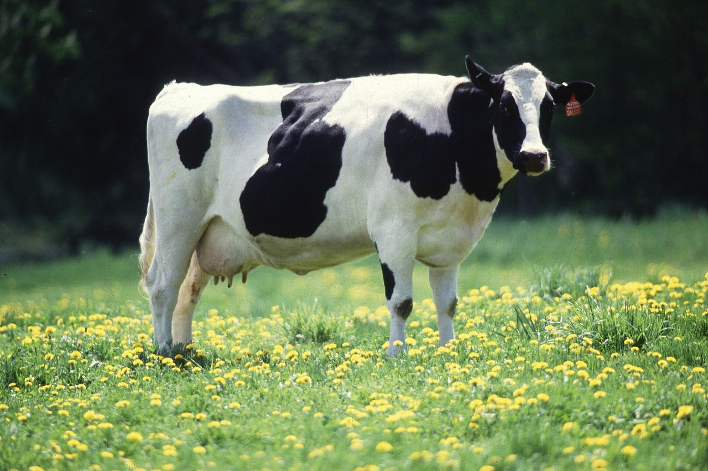

Frequently asked questions
Answers to the questions we hear most on the phone: when to draw blood, how to ship it, what the report means, and what else the lab tests. Search the list, or call (715) 653-2201.
No question matches those words. Try one word, such as ice or recheck, or call (715) 653-2201.

About BioPRYN® and pregnancy testing
What is BioPRYN?
BioPRYN is a blood pregnancy test for cattle, bison, goats and sheep, and has specific appeal for the commercial U.S. dairy industry because it delivers accurate, safe and economical pregnancy diagnostic results.
What does the test name stand for?
The test's name is a partial acronym for "Pregnant Ruminant Yes/No." This specific test uses ELISA technology.
How does BioPRYN detect pregnancies?
BioPRYN evaluates the blood, more specifically the serum or plasma, of ruminants for a protein called Pregnancy Specific Protein B (PSPB). PSPB is produced by the placenta, so pregnant animals will have the protein in their blood. This makes the test more accurate than earlier attempts at pregnancy diagnosis that evaluated blood or milk for progesterone or other hormones that can occur in normally cycling animals. The test uses enzyme-linked immunosorbent assay (ELISA) technology for processing.
How early in a pregnancy can animals be tested with BioPRYN?
Adult cattle can be tested for pregnancy 28 or more days following insemination; virgin heifers can be tested 25 days or more after insemination. Goats and sheep can be tested from 30 days after breeding. Animals that are detected open can then be immediately returned to time-saving re-synchronization protocols using products such as Estroplan and Gonabreed. To find the earliest test date for your animals, see When can I test?
How soon after calving can a cow be tested?
Cows should be at least 90 days since calving as well as 28 or more days from breeding, so the protein from the last pregnancy has cleared. For does and ewes that kidded or lambed recently, ask when you call.
What is the accuracy of BioPRYN?
The test is more than 99% accurate in detecting open cows (BioTracking's published figure), with less than 1% showing false-open (false-negative) results. Correct open detection is very important when giving Estroplan or other synchronizing drugs.
What does a "recheck" result mean?
BioPRYN reports each animal as pregnant, open, or recheck. A recheck means the reading fell between the two ranges: a pregnancy in trouble, an animal sampled too early, or a cow still too close to calving. Every plate is read by the lab's veterinarian, and a recheck usually comes with a note on when to sample her again. See how your results are read.
Can a cow that tested pregnant still come up open later?
Yes. A pregnant result is true for the day the blood was drawn. Some pregnancies are lost after that. If a decision rides on her result, call (715) 653-2201 and ask when to sample her again.
What are the advantages of using blood testing versus other methods of pregnancy diagnosis?
- Blood testing takes no palpation skill. Tail bleeding is an easy-to-learn procedure, so the farm's own crew can draw the samples.
- Blood testing allows producers to diagnose pregnancy at least 7 days sooner than rectal palpation, with no risk of damaging the fetus.
- Cows diagnosed open can then be re-bred sooner, resulting in tighter calving intervals, more calves born per year, and higher lifetime milk production, because cows achieve peak milk more often.
- The test is more convenient for dairies, because on-farm personnel can draw samples without locking up cows or waiting for the veterinarian to arrive, and then ship the blood samples.
- Eliminating rectal palpation also frees up the veterinarian to concentrate on higher-level issues with the dairy's management team.
Can heifers at a custom grower be tested?
Yes. Heifers test from 25 days after breeding. The grower's crew draws the samples and ships them, and the report goes wherever you mark on the form. See heifer testing.
Do you test goats and sheep?
Yes. Goats and sheep test from the same 2cc blood draw as cattle, from 30 days after breeding, on the Small Ruminant Pregnancy Test Submission Form. See pregnancy testing for goats and sheep.
Do you test bison?
Yes. The assay is validated in bison, and bison go on the Cattle-Bison Pregnancy Test Submission Form. See beef and bison herds.
Drawing and shipping samples
What should I do before my first box?
Please call our office before your first submission, at (715) 653-2201, or send the new client form. A call settles which supplies you need.
Do I need a veterinarian to draw the samples?
No. Your own crew can draw from the tail vein (goats and sheep: the jugular vein). See how to tail bleed a cow, which walks through it one step at a time.
What tubes should I use?
Red-top tubes, 3cc or 5cc, with at least 2cc of blood in each. We can ship tubes and needles with your first order; see the supplies list.
How should blood samples be prepared and shipped?
Dairy personnel draw blood samples from the tail vein, an easy-to-learn procedure; goats and sheep are drawn from the jugular vein. See how to tail bleed a cow. Blood samples of at least 2cc per animal should be collected in individual vacuum tubes and labeled with each animal's identification number. It is important to draw samples using individual, disposable needles to avoid cross-contamination between animals. Tubes containing blood samples should not be opened, and should be packed in a well-padded box to avoid breakage. They do not need to be packed in ice. Samples may stay in transit for several days without compromising the results of the test. The surest way to make the Wednesday cutoff is FedEx, UPS or U.S. Postal Service Priority Mail, shipped early in the week. The packing and shipping page has every packing step.
Which form goes in the box?
Each test has its own paper form. Fill it in and put it in the box with the samples. Cattle and bison pregnancy tests use the Cattle-Bison Pregnancy Test Submission Form. Goats and sheep use the Small Ruminant Pregnancy Test Submission Form. BVD PI tests use the BVD PI Test Submission Form. All three are on the packing and shipping page.
Do the samples need ice?
Pregnancy blood tubes do not. Ear notches and BVD blood samples do: refrigerate them, pack them with ice packs, and get them to the lab within 48 hours of collection.
What if a tube breaks in transit?
Call the lab. We will tell you which animals need a new sample.
Results and payment
Who reads the results?
Every plate is read by the lab's veterinarian. If a result raises a question, Dr. Pearson is a phone call away at (715) 653-2201. See how your results are read.
How long does it take to receive the test results?
Tests are run Monday through Thursday. Samples that reach the lab by Wednesday are reported Thursday by email, fax or phone, whichever you mark on the form.
We do not rush the assay; accuracy is the priority here, not turnaround. Every plate is read by the lab's veterinarian.
How are results sent?
By email, fax or phone, whichever you mark on the form. Samples that reach the lab by Wednesday are reported Thursday.
How do I pay?
Include payment with your samples; checks are payable to ADDC. The amounts are printed on the submission form and on the pregnancy testing and BVD testing pages.
Other tests, consulting and the lab
Do you test for Johne's, Leukosis or Mycoplasma?
Yes, as disease monitoring programs set up with Dr. Pearson. Call (715) 653-2201 so the right samples go in the box.
Can goats and sheep be tested for BVD PI?
No. BVD PI testing is for cattle and bison; goat and sheep herds should call the lab and ask about disease monitoring instead. See BVD PI testing.
Do you do herd health consulting?
Yes. Dr. Pearson consults on reproduction, records, nutrition and disease control programs for dairy and beef herds. It starts with a phone call; see herd health consulting.
Can I visit the lab?
No. Our lab is closed to the public. For the biosecurity of every herd we test, we do not allow visitors into the laboratory. Samples come to us by mail.